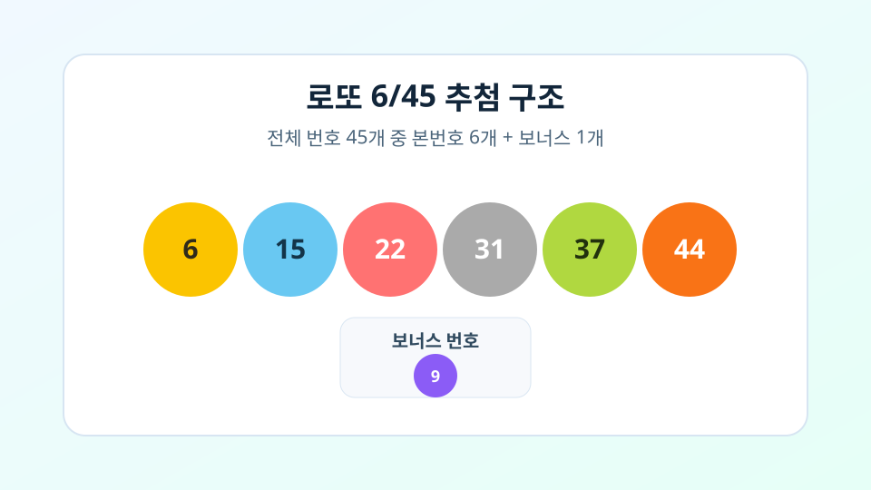
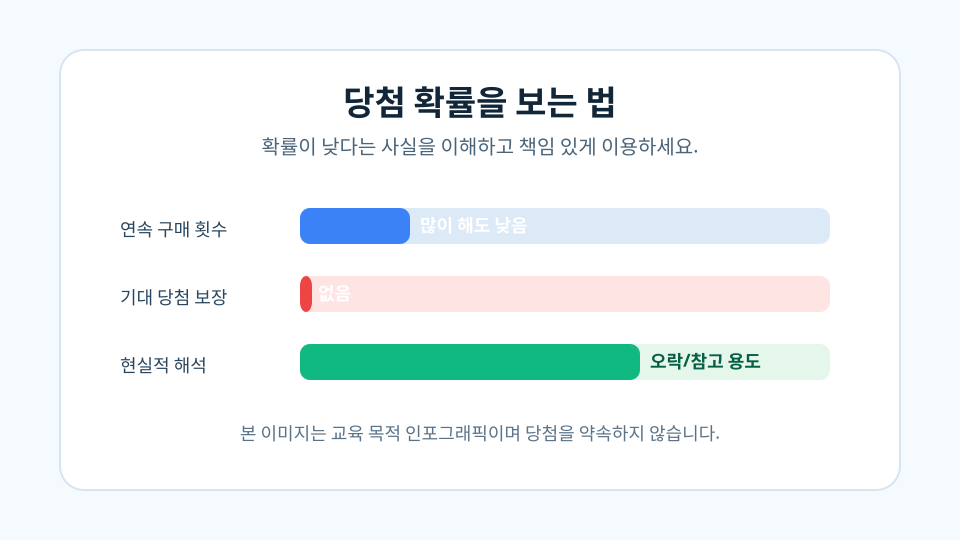

Lotto Blog
로또를 이해하면 선택 기준이 명확해집니다
이 페이지는 로또의 구조와 확률을 쉬운 설명으로 정리한 정보성 콘텐츠입니다. 실제 구매 판단은 개인의 책임 아래 신중하게 진행해야 합니다.
Lotto Intelligence Lab
로또 설명 블로그
Lotto Blog
이 페이지는 로또의 구조와 확률을 쉬운 설명으로 정리한 정보성 콘텐츠입니다. 실제 구매 판단은 개인의 책임 아래 신중하게 진행해야 합니다.
일반적으로 1부터 45까지 숫자 중 6개의 본번호가 추첨되고, 추가로 보너스 번호 1개가 선택됩니다. 당첨 등수는 본번호 일치 개수와 보너스 일치 여부로 결정됩니다.

로또는 본질적으로 확률 게임입니다. 특정 패턴이나 개인 규칙이 미래 추첨 결과를 보장하지 않습니다. 통계 도구는 선택 과정을 정리하는 데 도움을 줄 수 있지만, 결과를 확정하지는 못합니다.

권장: 예산 한도를 정하고, 오락 범위를 넘지 않도록 이용하세요.
이 블로그는 사용자에게 실제로 도움이 되는 설명 콘텐츠를 우선하며, 클릭 유도 문구/과장 표현을 지양합니다.
최종 업데이트: